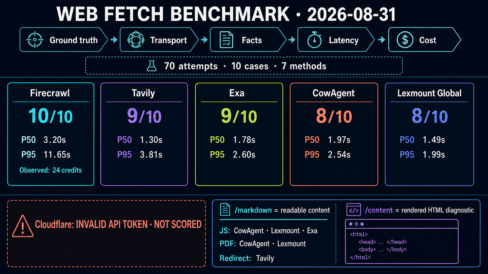

Formal evaluation report · web_fetch
Public Web Fetch Ground-truth Dataset
对 URL → 内容方法进行可复现比较。请求结果、失败响应、指标与环境信息均由本次运行 artifact 生成。
Attempts
70
完整保存的调用次数
Providers
7
本次实际运行的方法
Transport
94.0%
可比方法请求成功率
Strict content
88.0%
可比方法 ground-truth 通过率
一图读懂能力边界与本轮结果
同一总分只比较相同输入输出契约；Cloudflare 因无效 token 不评分，/content 也不与清洗正文混算。

提供方比较
Transport success 与 strict content 分开统计；score group 明确 rendered HTML 诊断不进入正文主榜。
| 方法 | Score group | Attempts | Transport | Content | P50 | P95 | Failures | Deadline overruns |
|---|---|---|---|---|---|---|---|---|
| cloudflare-content cloudflare_content | rendered-html-diagnostic | 10 | 0.0% | 0.0% | — | — | 10 | 0 |
| cloudflare-markdown cloudflare_markdown | readable-content | 10 | 0.0% | 0.0% | — | — | 10 | 0 |
| cowagent-built-in cowagent_builtin | readable-content | 10 | 90.0% | 80.0% | 1,973 ms | 2,540 ms | 2 | 1 |
| exa exa_contents | readable-content | 10 | 90.0% | 90.0% | 1,783 ms | 2,599 ms | 1 | 0 |
| firecrawl firecrawl | readable-content | 10 | 100.0% | 100.0% | 3,196 ms | 11,654 ms | 0 | 0 |
| lexmount-global lexmount | readable-content | 10 | 100.0% | 80.0% | 1,487 ms | 1,992 ms | 2 | 0 |
| tavily tavily_extract | readable-content | 10 | 90.0% | 90.0% | 1,300 ms | 3,814 ms | 1 | 0 |